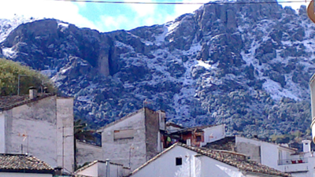
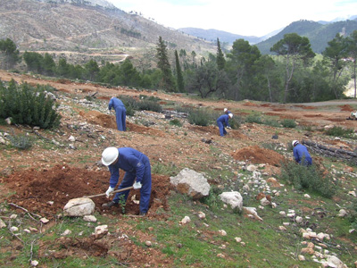

Los mercurios están disparatados. En pocos días hemos pasado de superar los 25 grados en muchos puntos de la comarca Sierra de Cazorla, a rozar los 0 grados en los puntos más altos de la serranía en la noche de ayer.
No solo llovió durante todo el día, sino que a media tarde comenzó a nevar intensamente, una situación que se prolongó durante algo más de una hora y dejó una estampa completamente invernal en plena primavera.

Así, hasta las 14:00 horas de hoy y a pesar de que el cielo está parcialmente nublado, Aemet, tiene activada la alerta amarilla por nieve.
A ellos se unen otros artistas como Los Coronas, Curtis Salgado, Chris Kane, Texas Scrath, Anson Thundergerg, Nine Below Zero , Ian Segal, Mighty Calacas, Los Deltonos y la primera banda confirmada del festival George Thorogood and Destroyer.
Cazorla ya huele a blues. Las primeras confirmaciones ya están en marcha y Cazorla va a poder disfrutar de dos grandes voces del panorama nacional e internacional.
Como viene ocurriendo tras varios años habrá un gran artista del panorama nacional. Loquillo, Rosendo, M-Clan y Raimundo Amador ya han pisado las tablas del escenario de la plaza de toros, este año es el turno de la mítica banda Fito y Fitipaldis.
El Aula de Cultura de la Diputación acogió la presentación del callejero digital unificado de Andalucía (CDAU), un proyecto en cuya elaboración la Administración provincial está colaborando con el Instituto de Estadística y Cartografía de Andalucía (ICA) y con el que se pretende aunar la información de los distintos callejeros disponibles de los municipios andaluces y crear uno solo que sea referencia para la planificación y la consulta de datos sobre calles, situación geográfica e instalaciones, entre otras cuestiones.
La Consejería de Agricultura, Pesca y Medio Ambiente ha iniciado las obras de mejora forestal en montes con problemas erosivos de la provincia de Jaén, que van generar cerca de 1.600 jornales, equivalentes a 40 puestos de trabajo por espacio de tres meses.

Así lo ha puesto de manifiesto la delegada territorial de Agricultura y Medio Ambiente, Irene Sabalete,quien ha especificado que las actuaciones medioambientales de carácter forestal en la zona suroriental de Jaén, concretamente en los municipios de Huesa y Quesada, tienen un presupuesto total de 289.309 euros.
Otro robo más. Uno de los gimnasios de Cazorla, situado en la calle del Carmen, fue el escenario de un robo ocurrido ayer.
Los dueños alertaron a la Guardia Civil de lo ocurrido tras descubrir un expositor del gimnasio roto, donde se encontraban complejos vitamínicos y ropa de deporte, entre otras cosas, según ha manifestado a este medio la Guardia Civil.
Periodico Digital de Cazorla: Realizado por Antonio Melero Bello para la asignatura TECNOLOGIAS WEB de Ingenieria Informatica UGR
Contacto pinchando aquí